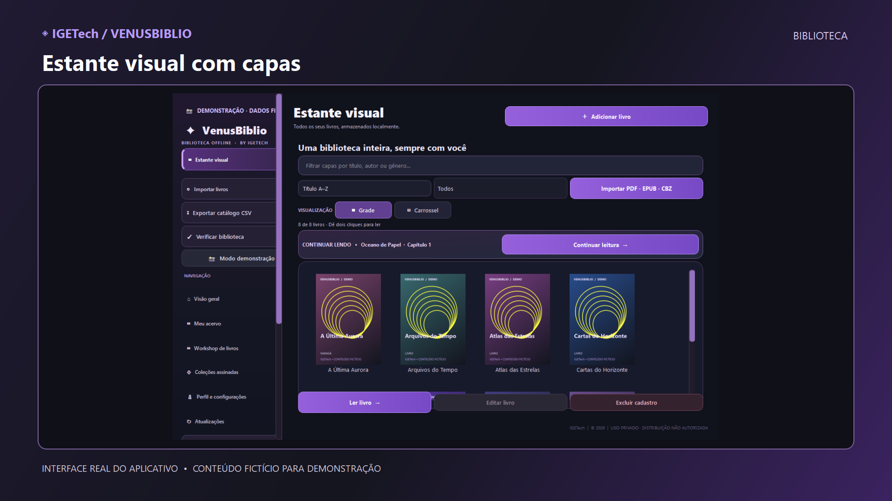

📚 Leitura offline
PDF, EPUB, mangás e histórias em quadrinhos em CBZ.
Biblioteca digital offline para Windows
Organize seus livros, leia PDFs, EPUBs, quadrinhos e mangás. Tudo em uma biblioteca com visual moderno, feita para Windows e para acompanhar você mesmo sem internet.

Imagem do programa real em modo de demonstração, com livros fictícios.
Instalador oficial para Windows disponível para download.
Para instalar ou atualizar, feche o VenusBiblio antes de executar o instalador. Sua biblioteca pessoal merece sempre uma cópia de segurança.
Quer compartilhar com alguém? Use o link simples de download.
PDF, EPUB, mangás e histórias em quadrinhos em CBZ.
14 temas para deixar sua estante com a sua cara.
Descubra coleções disponíveis quando estiver conectado.
Clique em “Baixar VenusBiblio” e salve o instalador no computador.
Execute o arquivo no Windows e siga as instruções na tela.
Abra o programa, crie seu acesso local e organize seus livros.
Em versões com atualização integrada, abra Atualizações → Verificar atualizações. Se não encontrar essa opção, basta baixar o instalador mais recente nesta página.
Não. Depois de adicionar seus arquivos à biblioteca, você pode ler offline. A internet é usada para baixar o aplicativo, acessar coleções online ou verificar atualizações.
O VenusBiblio oferece leitura de PDF, EPUB, histórias em quadrinhos e mangás no formato CBZ.
Ainda não. A versão disponível para download é para Windows.
Sim. Acesse a galeria de demonstração para conhecer as telas reais do VenusBiblio.